We follow the given equation above to compute the values of our resulting image v, given some source image s that we wish to blend into target image t.
We interpret S as the region we want to blend, and N_i as the 4-neighbors of i. Thus we read this equation as trying to find the least-squares solution to minimizing the difference in gradient in the resulting image, within the blended region, with the original, while additionally minimizing the difference along the masked region
Intuitively, if this is solved, it will give us a more natural looking result, since we've done blending in the gradient domain, than the laplacian pyramid scheme we worked with previously.
Here are some results:
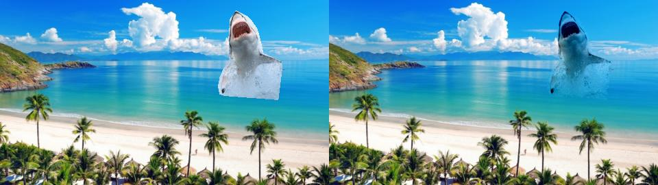
Here we compare the naive blending with the gradient-domain blending. Notice that the interior colors of the shark change; this is a byproduct of minimizing the gradient differences. Additionally, this works well because the textures of the image and the colors along the border align with the target.
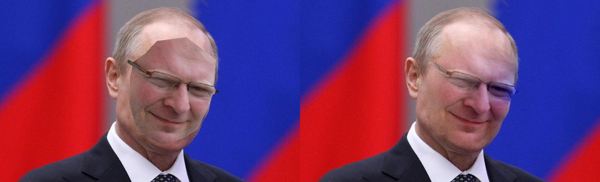
We try to blend professor Efros' face onto Vladimir Putin's; this shows some noteworthy aspects of gradient-domain blending. Notice how the right side of the face has turned blue; without putting Efros' face entirely within Putin's, the blue from the background will 'bleed' in, since it will be on the edge of the mask.
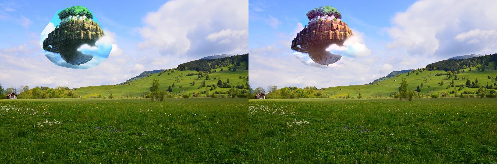
I tried to blend a famous picture from Castle in the Sky in with a standard landscape photo; however, this proved to be very difficult. The main reason for this is because the textures along the edge don't line up very well, making the seam much more visible. However, it's still a marked improvement over naive blending. This can't really be avoided without feature warping.
Part 2 : Mixed Gradient Blending
The main idea behind mixed gradient blending is that for images with holes, we want to keep the background textures while preserving the overlaying of the source image onto the target. Thus we take the max over the source and target image gradients and call it d_ij:

Here are some results:
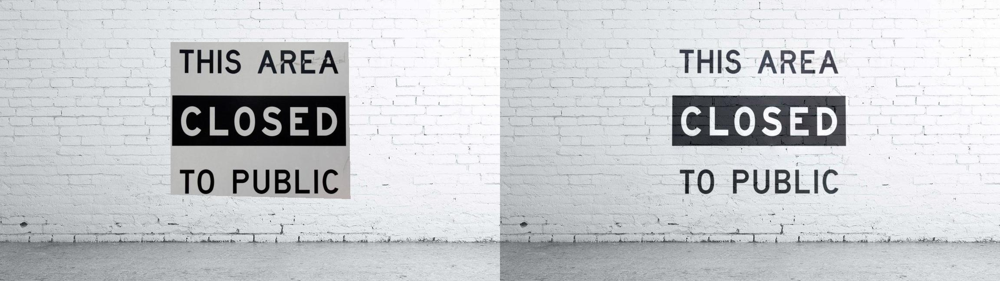
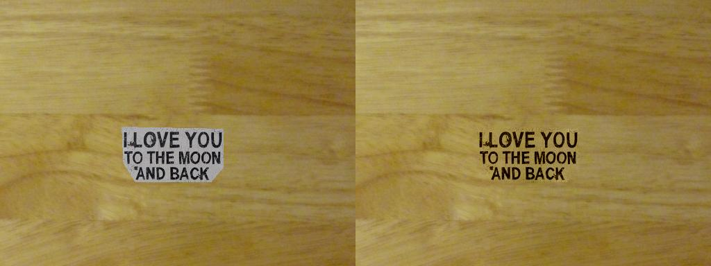
Notice how the background textures continue to blend into the holes in the source image where the source image was flat.
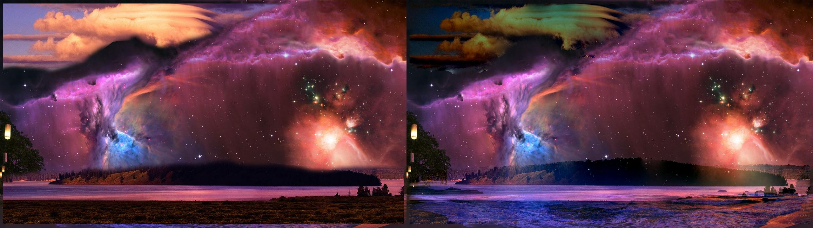
This is an image I blended previously for the laplacian pyramid blending. Above is the poisson-mixed-gradient blended version, and below is the laplacian pyramid blended version. Let's compare:
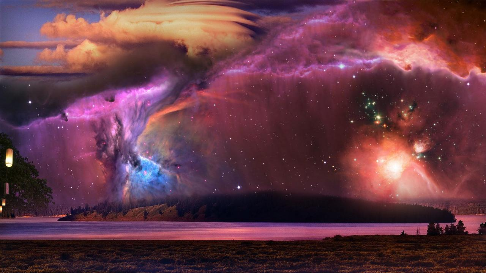
Noticably, the gradient domain blending has less seams, but also has more unusual artifacts.
Bells & Whistles : color2gray
In order to implement color2gray, we first convert the image from RGB to the HSV space. Immediately, we notice that the value channel of the HSV map is very useful; in fact, we could just take the value channel and have a pretty decent grayscale representation:
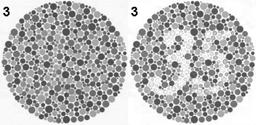
However, this doesn't necessarily translate well to other images, since this does not consider saturation at all. So instead, we pose this as a mixed gradients problem, where we want to blend the saturation channel (as the source) into the value channel (the target), with no mask. Running our least-squares solver on this setup, we find a nice result:
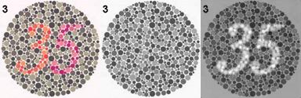
Now, the differences in saturation are more pronounced, and we have a clearer view of the features of the image.
Bells & Whistles : Texture Flattening
The poisson equation solving problem can also be applied to the texture flattening problem. We pose the problem as follows:
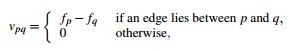
Essentially, we solve for gradients such that the gradients are the same as the source if there is an edge across two neighboring pixels p and q, otherwise the gradient will be set to zero. The canny edge detector is used as the mask for this problem.
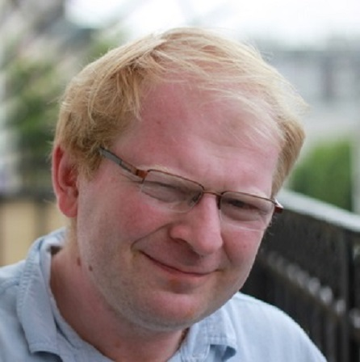
As shown above, the result is that the images have no gradient within edges, and gives a quantizing effect to the color map, while not actually quantizing. The end result looks kind of artistic and nice.
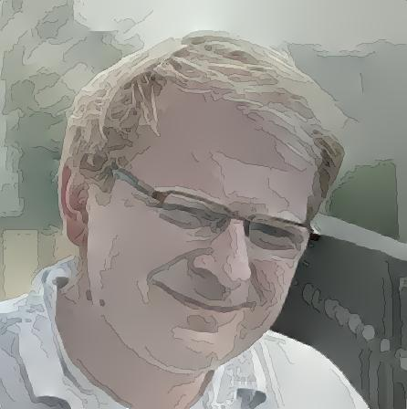
Here I overlaid lightly the lines from the edge detector to show how the image was constructed. Notice how the gradients tend to change across the lines.
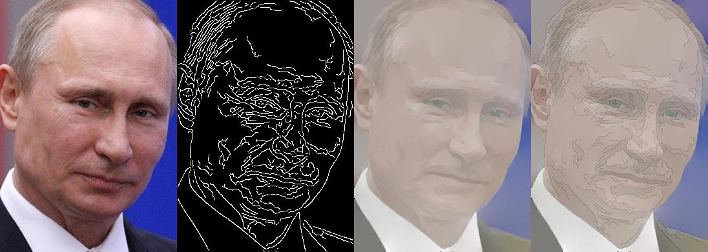
I did the same for Vladimir Putin. We get a similar cartoony/handdrawn-looking effect.
What I learned
The gradient domain is quite powerful, since small global changes can make a hard local change seem less jarring. However, it still maintains the weakness of not being able to blend/warp features together.